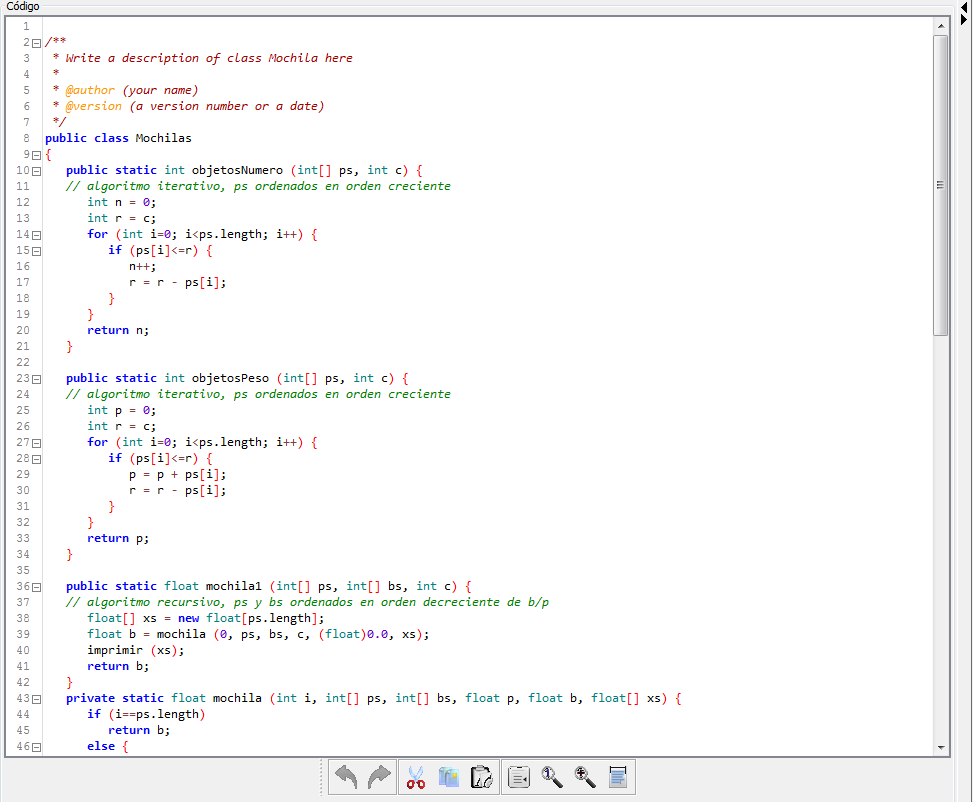

volver
Panel editor
El panel editor es un editor de texto con coloreado de sintaxis, numeración de líneas y regiones plegables:

En este editor nos encontramos los botones habituales de cualquier editor de texto:
- Deshacer
- Rehacer
- Cortar
- Copiar
- Pegar
- Ir a línea..
- Buscar..
- Buscar siguiente
- Seleccionar todo
16 de Septiembre de 2016